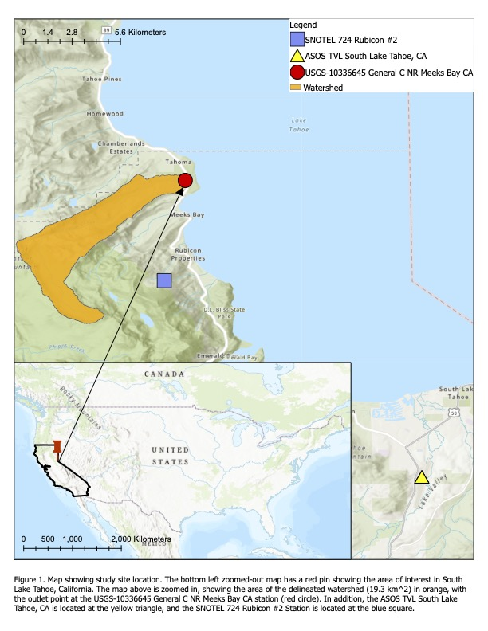
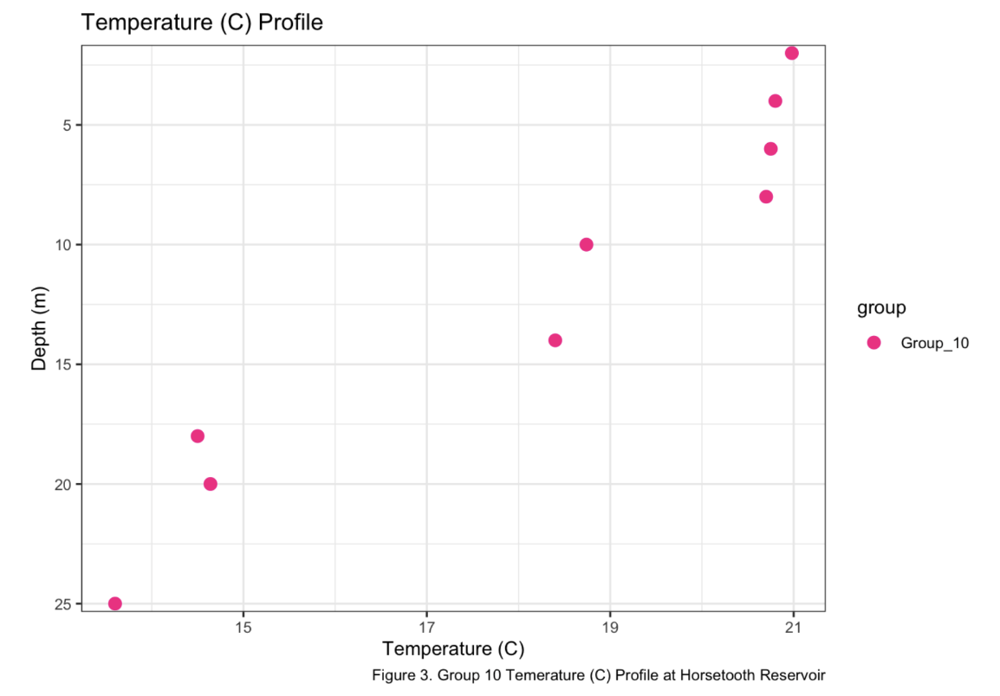
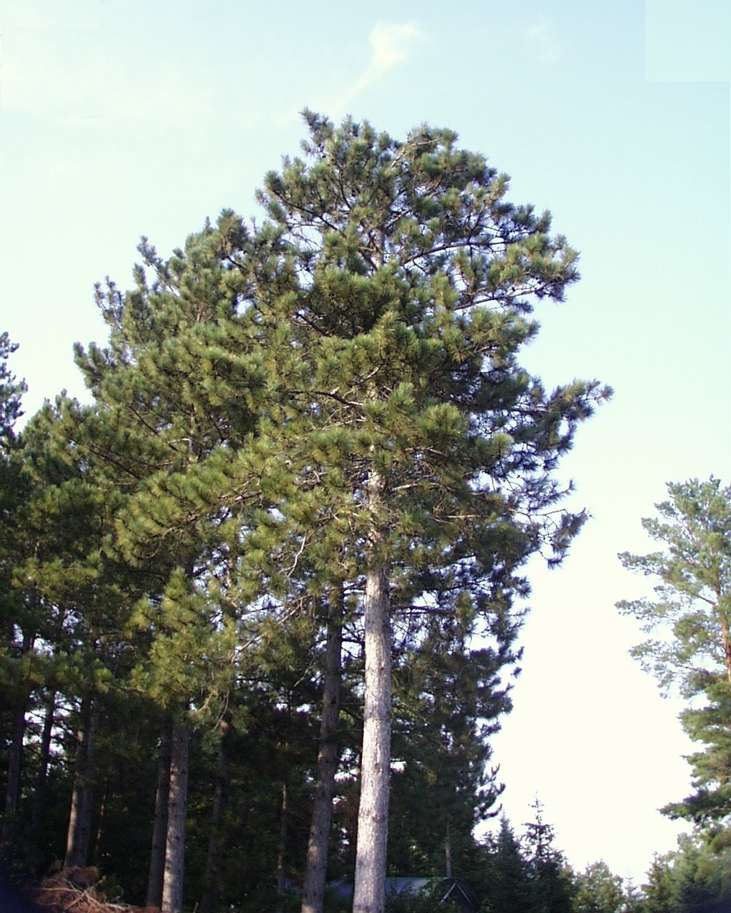
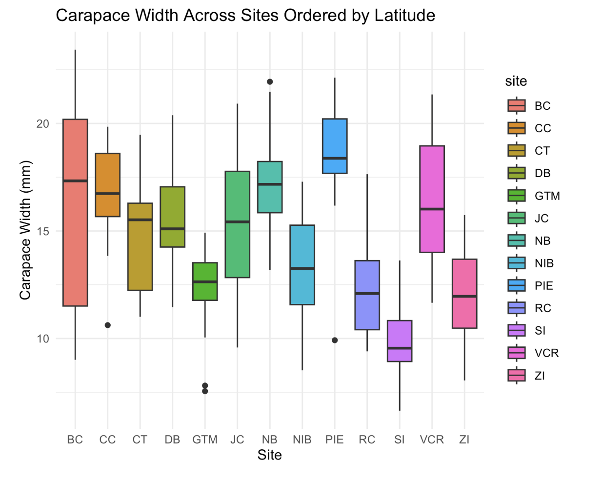
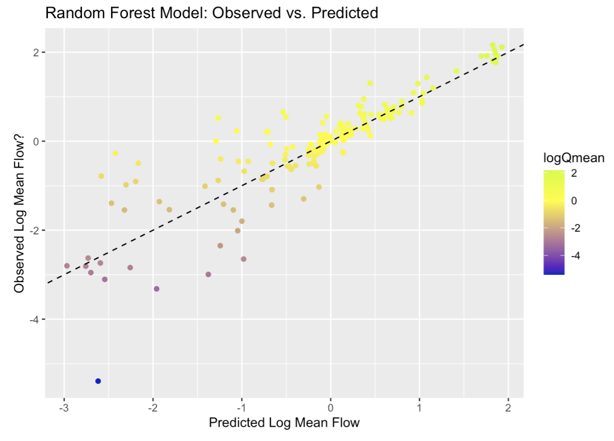
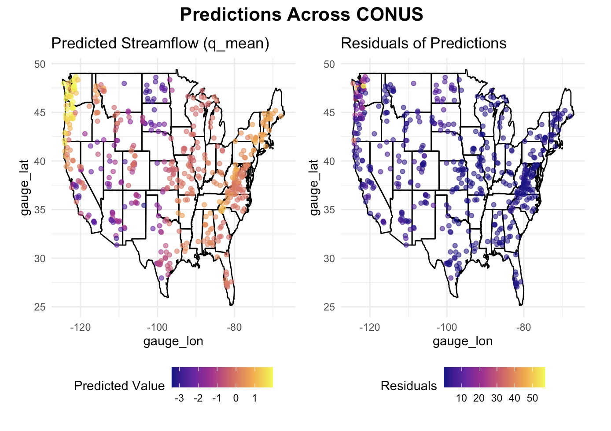
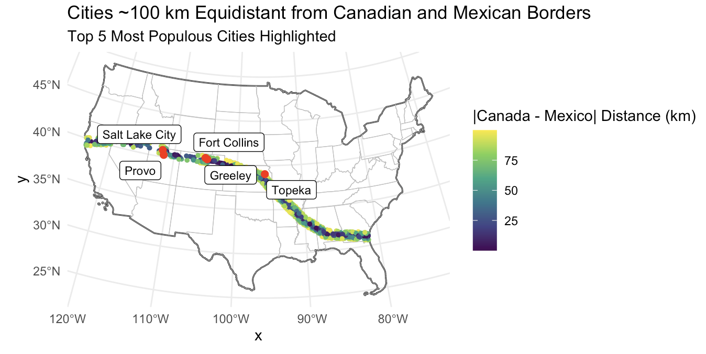

Presented here are selected projects and assignments that demonstrate skills developed through the use of RStudio and other analytical tools, with applications in environmental data science and related fields.
Honors Thesis - Refurbishing and Evaluating the Effects of Beaver Dams in Colorado Against Climate-Mediated Fires

Abstract: Beaver dam analogs (BDAs) are increasingly used to restore riparian systems by mimicking the hydrologic and geomorphic effects of natural beaver dams. This study evaluated the influence of a recently installed BDA on channel form and sediment dynamics in Little Beaver Creek, a post-fire watershed in the Cache la Poudre basin. Historical beaver activity and habitat suitability were assessed using the Colorado Beaver Activity Mapper (COBAM) and the Beaver Restoration Assessment Tool (BRAT). Field measurements collected after installation revealed increased sediment deposition and reduced depths upstream, formation of a downstream plunge pool reaching bedrock, and development of gravel patches associated with sediment sorting. These early-stage responses indicate that the BDA is functioning as intended by slowing flow, retaining sediment, and enhancing habitat complexity. Despite installation delays due to winter freezing, the design aligns with Colorado Parks and Wildlife’s draft Beaver Conservation and Management Strategy, providing a foundation for continued restoration and monitoring.
Advanced Snow Hydrology - Trace Events, Precipitation Undercatch, and Probability of Snow


This assignment analyzed hourly meteorological data from the South Lake Tahoe ASOS station to examine how trace precipitation, wind-induced gauge undercatch, and precipitation phase classification affect estimates of total precipitation and snowfall. Using R, the analysis compared cumulative precipitation with and without trace events, applied temperature-dependent wind undercatch corrections, and estimated snowfall using air temperature, dewpoint temperature, and a probability-based mixed-phase method. Results demonstrated that wind correction substantially increased winter precipitation totals, and that dewpoint- and probability-based methods produced higher and more consistent snowfall estimates than a simple temperature threshold. The project highlights the importance of physically based corrections and classification methods when quantifying water inputs in mountain environments.
Limnology - Horsetooth Reservoir Water Analysis

This project consisted of a semester-long data collection, starting from going to Horsetooth Reservoir and using fieldwork equipment such as the van dorn water sample, sonde, plankton net, Lugol’s solution, chlorophyll a sampling, and a secchi disk. Following the collection of water samples, data was able to be extracted from the water. From this project, I learned a lot about how factors such as temperature, oxygen, pH, salinity, chlorophyll a, dissolved organic carbon, dissolved organic nitrogen, turbidity, and plankton populations can affect the aquatic ecosystem within a freshwater body of water.
Minnesota Tree Growth Analysis Lab

This lab was centered around exploring data manipulation with dplyr using long term tree growth observation records from Minnesota. Working through this lab, I learned how to chain the core dplyr functions into efficient, pipe-based workflows for a real ecological data set. I also learned how to calculate forestry metrics such as basal area, classify trees by DBH (diameter base height), and interrogate long-term growth records to answer targeted biological questions.
LTER Network Data

This lab introduced us to basic statistical tests in R, including chi-square, t-tests, correlation, ANOVA, and regression tests, framed around long-term vertebrate data from the Andrews Forest LTER. We utilized data from the Long-Term Ecological Research (LTER) Network, which is a collaborative effort involving more than 2000 scientists and students investigating ecological processes over long temporal and broad spatial scales. Beyond running the tests, I learned to check assumptions (normality, equal variances), visualize results, and interpret ecological meaning from p-values and confidence intervals.
Machine Learning in Hydrology

This lab explored predictive modeling in hydrology using the tidymodels framework and the CAMELS (Catchment Attributes and Meteorology for Large-sample Studies) dataset. With this CAMELS basin data set, I learned to build my first end-to-end tidymodels worflow: downloading files programmatically, merging attributes with powerjoin, exploring correlations, and training multiple regression models to predict mean streamflow. The lab cemented concepts like data splitting, recipes for preprocessing, cross-validation, and visual evaluation with yardstick metrics.
Machine Learning in Hydrology: Hyperparameter Tuning

This lab built off of the first machine learning in hydrology, where we learned a lot about the Machine Learning process. Picking up from that, I constructed a ML pipeline that tested three candidate models, selected the best performer, and carried out Latin-hyper-cube grid tuning on multiple hyperparameters. I finished by finalizing the workflow, validating it with last_fit on held-out data, and mapping predictions and residuals, giving me a holistic view of model generalization.
Distance to the Border

This spatial analysis lab taught me to re-project data with sf, compute greate-circle and Euclidean distances from thousands of US cities to national, state, and international boundaries, and visualize the patterns with context-rich maps. I also practiced combining geometry operations (st_union, st_cast, st_distance) with tidyverse workflows to quantify border-zone demographics.